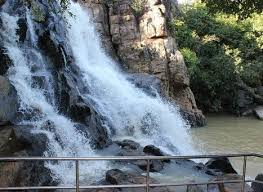

Discover the Beauty of Keonjhar
A beautiful district filled with nature, culture, history, spirituality, and peaceful surroundings.
The Land of Waterfalls and Hills
Keonjhar is one of the most beautiful districts of Odisha. It is known for its green forests, hills, waterfalls, minerals, temples, and simple traditional lifestyle.
The district is famous for tourist places like Sanaghagara Waterfall, Badaghagara Waterfall, Khandadhar Waterfall, Murga Mahadev Temple, and Gonasika, the origin place of the Baitarani River.
Keonjhar also has a rich tribal culture. The festivals, folk traditions, local food, and natural environment make it a peaceful and attractive place for visitors.

Culture
Keonjhar has a rich tribal culture with traditional dances, local festivals, simple lifestyle, and beautiful folk traditions.
Tourism
Major attractions include Sanaghagara Waterfall, Badaghagara Waterfall, Khandadhar Waterfall, Gonasika, and Murga Mahadev Temple.
Nature
Keonjhar is surrounded by hills, forests, rivers, waterfalls, and peaceful natural beauty that attracts nature lovers.